Triage — every prompt, every key press, and whether it happened
20 runs. For each thing we asked the world model for, this page shows when it was sent, a key frame from when it should be visible, and an independent model's strict yes / partly / no from that frame alone. Key presses are checked by measuring how much the picture moved while the key was held, against the still stretches of the same take.
Poem 03 take 1: generated patch cues + director
W held for most of every patch (as scheduled; individual presses were not logged in this run) · judged by gemini-4-argon

Opening text sent (329 words)
STYLE. Afrofuturist Atlantis: a Black harbour city that kept its flood. Old walls carry a salt line at four metres. Ruins are mended in white ceramic seamed with light. Rusted teal steel, painted plywood, wet asphalt as a mirror. Photographic, practical light sources, humid air. The future here is repaired and inherited, never chrome or sterile. EYE. 22mm equivalent, camera 0.8 m off the ground, eye-level, measured across 18 of this poem's shots. Tracking with the tumbling tambourine in black, then a clean pass through the window into the nave. LIGHT. A time-lapse across a day, ending in storm. Storm then calm; mist on the sea; dew burning off. The white ceramic itself, lit by the sky; mirror pools that hold the stars. Deep brown skin lit with full tonal range: a warm key and a rim light in the district's glow colour. Never crushed to a flat silhouette unless the beat asks for one. PLACE. Tambourine tumbles in black. The tambourine falls, flies, tumbles through black space and enters the chapel through a window, still whole. The chapel's seaward lancet. PEOPLE. Everyone here is Black. The Poet (Black man, thirties; matte black fitted mock-neck long sleeve, black trousers, black boots; a thin seam of white light from collar to heart that brightens when he speaks); close-cropped hair, short beard; unhurried, hands open. The Choir (Black women and men, every age; deep blue choir robes with white stoles); standing in rows, swaying. WATER. His words become rain. When he speaks, rain rises from where he stands; when he is silent it stills and mirrors the light. It runs thick as honey. It starts first drops and ends a standing flood. It never puts out a light and never hides a face. SOUND. The bell that is gone, rain on stone, choir chords, laughter. Under it, room for one man's speaking voice. MOOD. Disillusionment, Emptiness, Desolation, Cleansing, Resignation, Sadness. Abandoned ceremonial space; decay gives way to a pale, emptied shore.
| Sent at | Asked for | Key frame | Happened? | What the judge saw |
|---|---|---|---|---|
| 10.5 sscript | Empty chapel: pews, choir, baptism pool. Rain pools, steady. In frame: the Choir (Black women and men, deep blue choir robes with white stoles). | 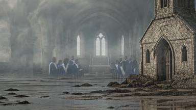 frame at 15.5 s | partly | A choir in blue robes with white stoles stands inside a misty, flooded stone chapel with a rocky exterior composite on the right. |
| 16.2 sdirector model | Black women and men in deep blue robes with white stoles face the lancet. | 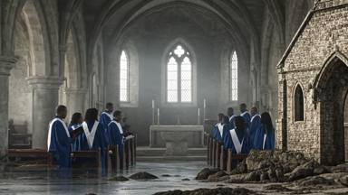 frame at 21.2 s | yes | Black men and women in blue choir robes with white stoles stand in a flooded stone chapel facing toward the altar and lancet windows. |
| 17.1 sscript | Gifts at the side doors. Rain runs, sheeting. In frame: the Choir (Black women and men, deep blue choir robes with white stoles). | 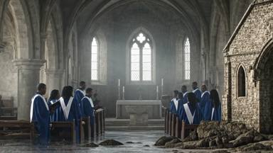 frame at 22.1 s | partly | The choir in blue robes stands in the flooded chapel, with no gifts, side doors, or sheeting rain visible. |
| 24.1 sscript | Accelerated chapel decay. Rain flows, pooling ankle-deep. In frame: the Choir (Black women and men, deep blue choir robes with white stoles). | 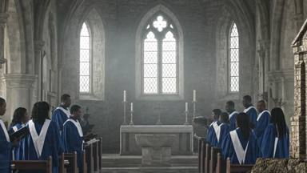 frame at 29.1 s | partly | The camera moves closer to the choir in blue robes standing by the pews and altar inside the stone chapel. |
| 30.2 sdirector model | Black women and men in deep blue choir robes with white stoles depart. | 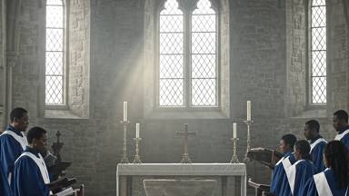 frame at 35.2 s | partly | As the camera zooms in toward the altar, the choir members remain standing at the sides rather than walking away to depart. |
| 36.3 sscript | Thunderstorm consumes the chapel. Rain flows, pooling ankle-deep. In frame: the Choir (Black women and men, deep blue choir robes with white stoles). | frame at 41.3 s | partly | A closer view of the altar with candles and a cross, with a few choir members still visible at the edges of the frame. |
| 42.1 sdirector model | Show the beach flat with broken pillars, rubble, and a tilting cross. | frame at 47.1 s | no | A close view of the stone wall, lattice window, altar cross, and four candles inside the chapel. |
| 44.9 sscript | Storm clears onto shoreline ruins. Rain runs, a standing flood. In frame: the Choir (Black women and men, deep blue choir robes with white stoles). | 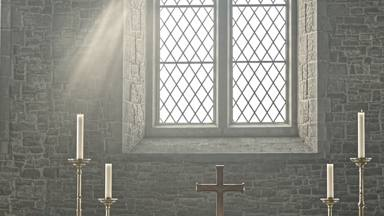 frame at 49.9 s | no | The camera zooms closer to the lattice window, upright altar cross, and four candles. |
| 52.0 sscript | Tambourine shatters. Rain pools, a standing flood. In frame: the Choir (Black women and men, deep blue choir robes with white stoles). | 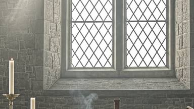 frame at 57.0 s | no | A close-up of the lattice window with a lit candle on the left and the top of the cross below. |
Poem 03 take 2: from the lectern, hand-written cues
W held for the first 40% of each spoken line, at most 3 s (as scheduled; not logged) · judged by gemini-4-argon
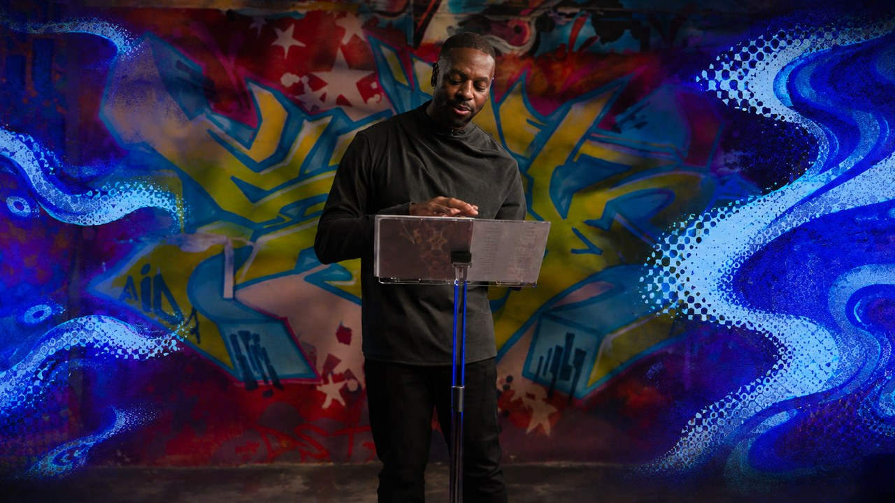
Opening text sent (122 words)
A Black man in his thirties with close-cropped hair and a short beard, wearing a matte black mock-neck long sleeve and black trousers, stands reading at a clear acrylic lectern. Behind him is a painted wall. Blue water moves in from both sides of the frame along the ground. Photographic, soft practical light, humid air. The camera is at eye level, a few steps in front of him, and will walk forward past his left shoulder toward the wall. He stays where he is and keeps reading. Nobody else is here. Sound: a quiet room, water moving slowly, room for one man's speaking voice. Rain is the water of this place: it falls slowly and thickly, and it never hides a face.
| Sent at | Asked for | Key frame | Happened? | What the judge saw |
|---|---|---|---|---|
| 2.5 sscript | The painted wall behind the man parts like a curtain onto an empty stone temple. We walk in past him. Nobody inside. | 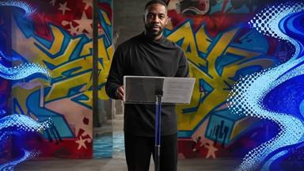 frame at 7.5 s | partly | A man stands at a music stand while a graffiti wall behind him begins to split open to reveal a stone hall. |
| 9.7 sscript | Ahead in the empty nave: bare choir stands, and a sunken baptism pool, dry and cracked. Nobody. | 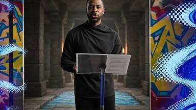 frame at 14.7 s | partly | The graffiti walls part further behind the man, revealing a stone hall with pillars and a pool filled with blue water on the floor. |
| 13.2 sscript | Cobwebs hang thick over the wooden pews. Dust falls. The wood is soft and crumbling. | 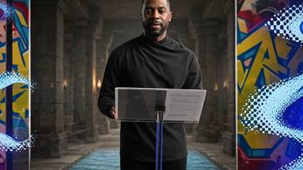 frame at 18.2 s | partly | The man stands in front of the stone hall where faint benches are visible along the sides, with no clear cobwebs or crumbling wood. |
| 22.0 sscript | A side door stands open ahead. On its stone step: opened gift boxes, lids off, ribbons loose, empty. Nobody. | 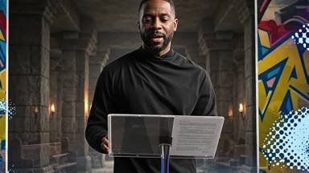 frame at 27.0 s | partly | The camera moves closer to the man in the torch-lit stone hall with wooden pews on the sides, but no open side door or gift boxes are visible. |
| 28.7 sscript | Thunder. Heavy slow rain pours through the roof and washes the walls away until only open wet shore remains. | 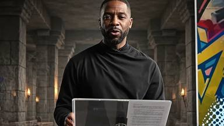 frame at 33.7 s | no | The man speaks at his stand inside the intact stone hall with torches burning on the pillars. |
| 35.9 sscript | The storm clears. On the wet sand, household goods laid out in rows like a yard sale: chairs, lamps, folded clothes. | 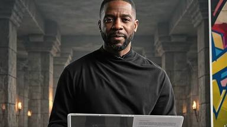 frame at 40.9 s | no | A closer view of the man speaking inside the dry stone hall with no sand or household goods visible. |
| 39.8 sscript | A black scorched crack from lightning splits the sand, dividing the rows of goods into two halves. | 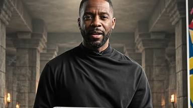 frame at 44.8 s | no | A chest-up shot of the man inside the stone temple with no sand, lightning crack, or goods. |
| 43.3 sscript | Loaves of bread lie on the sand, soaked through and falling apart in the rain. | 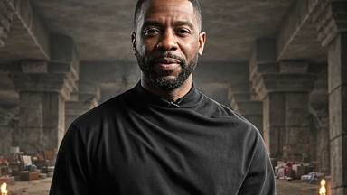 frame at 48.3 s | partly | Behind the man in the stone hall, piles of boxes and clutter are visible on the floor along the sides, without sand or rain. |
| 46.8 sscript | Stained blankets lie in a heap. Thin puppet strings hang down onto them from the grey sky. | 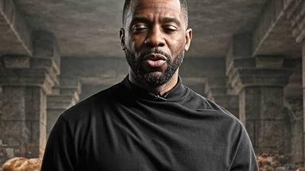 frame at 51.8 s | partly | Loaves of bread are visible in the bottom left corner behind the man in the stone hall, without blankets, puppet strings, or sky. |
| 52.4 sscript | Two sets of men's footprints, side by side, lead away across the wet sand toward the water. Nobody in sight. | 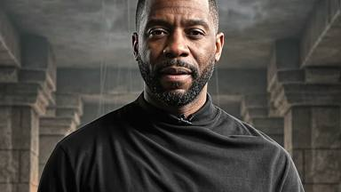 frame at 57.4 s | no | A close-up of the man in the stone hall with thin vertical lines or strings hanging behind his head, and no sand or footprints. |
| 55.9 sscript | Where the footprints end, a tambourine lies broken in pieces on the sand. | 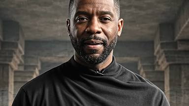 frame at 60.9 s | no | A tight close-up of the man's face and shoulders in the stone hall with no sand, footprints, or tambourine. |
Litmus: door (2 takes)
W held 0.5–14 s (as scheduled). No video was kept; only three frames per take.
Opening text sent (45 words)
A wet stone plaza at dusk in an Afrofuturist harbour city. Ahead stands a tall terracotta temple with a great arched doorway, open and dark inside. The camera is at eye level on the plaza, facing the doorway. Photographic, practical light. Nobody in the foreground.
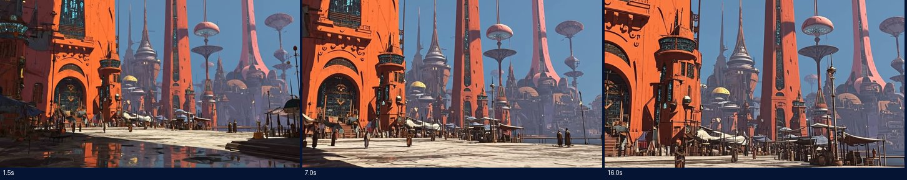
| Time | Check | Result |
|---|---|---|
| 1.5 | outside | yes |
| 7.0 | doorway closer | yes |
| 16.0 | inside | no |
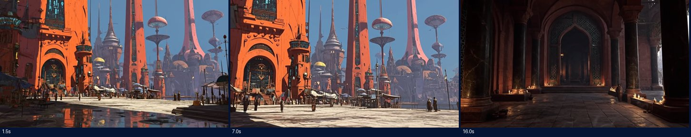
| Time | Check | Result |
|---|---|---|
| 1.5 | outside | yes |
| 7.0 | doorway closer | yes |
| 16.0 | inside | yes |
Litmus: walker (2 takes)
W held 0.5–14 s (as scheduled). No video was kept; only three frames per take.
Opening text sent (80 words)
A wet stone plaza at dusk in an Afrofuturist harbour city. Ahead stands a tall terracotta temple with a great arched doorway, open and dark inside. A Black man in his thirties with close-cropped hair, wearing a matte black mock-neck long sleeve, black trousers and black boots, stands a few steps ahead of the camera with his back to us, facing the doorway. The camera is at eye level behind him and follows him. Photographic, practical light. Nobody else nearby.
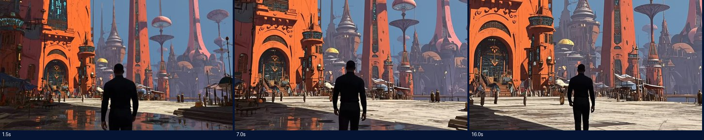
| Time | Check | Result |
|---|---|---|
| 1.5 | man from behind | yes |
| 7.0 | man from behind | yes |
| 16.0 | inside | no |
| 16.0 | man from behind | yes |
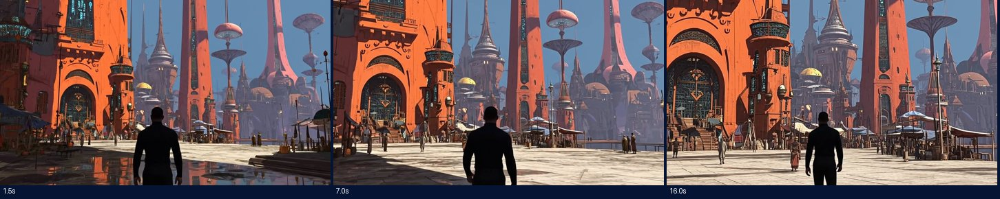
| Time | Check | Result |
|---|---|---|
| 1.5 | man from behind | yes |
| 7.0 | man from behind | yes |
| 16.0 | inside | no |
| 16.0 | man from behind | yes |
Key test, first person (4 takes, no text)
One key held 1–7 s per take. Measured: overall change and sideways shift between the first and last frame.
Opening text sent (45 words)
A wet stone plaza at dusk in an Afrofuturist harbour city. Ahead stands a tall terracotta temple with a great arched doorway, open and dark inside. The camera is at eye level on the plaza, facing the doorway. Photographic, practical light. Nobody in the foreground.

| Time | Check | Result |
|---|---|---|
| 1–7 | key none | change 23.6, shift 0 px |
| 1–7 | key key_w | change 38.5, shift 53 px |
| 1–7 | key key_a | change 60.2, shift -54 px |
| 1–7 | key arrow_left | change 58.4, shift -307 px |
Street walk, zone 020
Keys as scheduled (not individually logged). · judged by gemini-4-argon
Opening text sent (118 words)
Afrofuturist twilight market: Naraka Market district, alley only open at sunset and vanished by dawn, architecture made of bent shipping containers and melted billboard plastics, locals speaking in proverbs and sealing deals with songs, flickering neon light r. A Black man in his thirties with close-cropped hair, wearing a matte black mock-neck long sleeve, black trousers and black boots, stands a few steps ahead of the camera with his back to us. He walks away from us down the middle of this street at an easy pace. The camera is at eye level behind him and follows him, keeping his whole body in frame. Keep the look of the starting picture exactly. Sound: his footsteps and the street.
| Sent at | Asked for | Key frame | Happened? | What the judge saw |
|---|---|---|---|---|
| in the opening text | A Black man in black clothing, seen from behind, is walking away from the camera. | 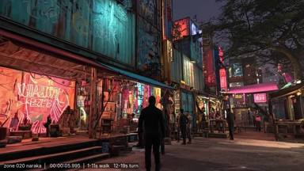 frame at 6.0 s | yes | A man in dark clothing is seen from behind walking down a street lined with neon-lit shops. |
| in the opening text | He has moved further into the place than at the start (walking has carried him forward). | 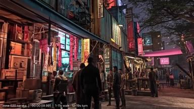 frame at 10.0 s | yes | The man in dark clothing has walked further down the street past the first storefront. |
| in the opening text | After the camera turned, the same man is still in frame. | 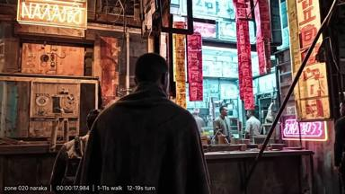 frame at 18.0 s | yes | The man in dark clothing is seen from behind in a closer view, facing the storefronts on the left. |
Key presses (as scheduled) — movement in the picture while held; still segments in this take average None
| Held | Key | Movement | Against still |
|---|---|---|---|
| 1–11 s | key_w | 9.99 | — |
| 12–19.5 s | arrow_left | 31.54 | — |
Street walk, zone 091
Keys as scheduled (not individually logged). · judged by gemini-4-argon
Opening text sent (113 words)
The Shrouded Arcade (Abandoned Consumer District), nostalgic and glitching atmosphere, escalators looping endlessly with no passengers, broken vending kiosks glowing with out-of-date ads, ambient speaker voice glitching between sale announcements and poetry, s. A Black man in his thirties with close-cropped hair, wearing a matte black mock-neck long sleeve, black trousers and black boots, stands a few steps ahead of the camera with his back to us. He walks away from us down the middle of this street at an easy pace. The camera is at eye level behind him and follows him, keeping his whole body in frame. Keep the look of the starting picture exactly. Sound: his footsteps and the street.
| Sent at | Asked for | Key frame | Happened? | What the judge saw |
|---|---|---|---|---|
| in the opening text | A Black man in black clothing, seen from behind, is walking away from the camera. | 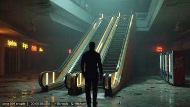 frame at 6.0 s | yes | A man in dark clothing is seen from behind walking toward a set of escalators in a dimly lit mall. |
| in the opening text | He has moved further into the place than at the start (walking has carried him forward). | 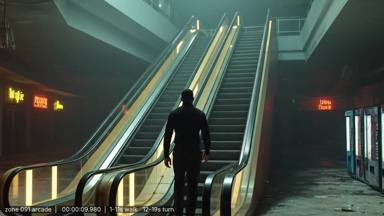 frame at 10.0 s | yes | The man has walked closer to the bottom of the right escalator. |
| in the opening text | After the camera turned, the same man is still in frame. | 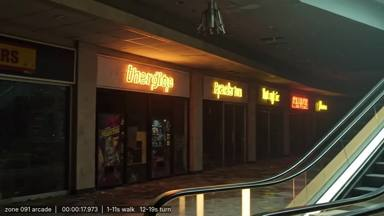 frame at 18.0 s | no | The camera faces the storefronts and the side of the escalator, with no person visible in the frame. |
Key presses (as scheduled) — movement in the picture while held; still segments in this take average None
| Held | Key | Movement | Against still |
|---|---|---|---|
| 1–11 s | key_w | 5.71 | — |
| 12–19.5 s | arrow_left | 23.59 | — |
Street walk, zone 098
Keys as scheduled (not individually logged). · judged by gemini-4-argon
Opening text sent (118 words)
You live in a cleaning drone's last dying memory. The moon? A corporate logo, shattered and hovering. Glass scrapes glass in high-altitude wind. Elevators wheeze like iron lungs. Skybridges shudder under synthetic footfall. Below: streetlights sync to heartbea. A Black man in his thirties with close-cropped hair, wearing a matte black mock-neck long sleeve, black trousers and black boots, stands a few steps ahead of the camera with his back to us. He walks away from us down the middle of this street at an easy pace. The camera is at eye level behind him and follows him, keeping his whole body in frame. Keep the look of the starting picture exactly. Sound: his footsteps and the street.
| Sent at | Asked for | Key frame | Happened? | What the judge saw |
|---|---|---|---|---|
| in the opening text | A Black man in black clothing, seen from behind, is walking away from the camera. | 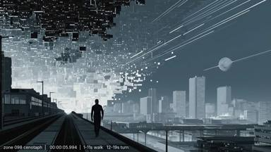 frame at 6.0 s | partly | A man in dark clothing is seen walking along an elevated track, though he appears to be facing toward the camera rather than walking away. |
| in the opening text | He has moved further into the place than at the start (walking has carried him forward). | 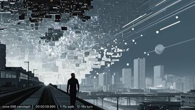 frame at 10.0 s | no | The man has actually moved closer to the camera compared to the previous frame, walking forward toward the viewer. |
| in the opening text | After the camera turned, the same man is still in frame. | 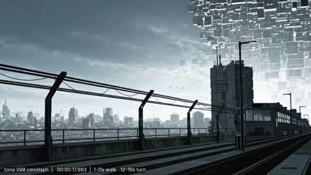 frame at 18.0 s | no | The camera has panned left toward the railings and city skyline, and the man is no longer visible in the frame. |
Key presses (as scheduled) — movement in the picture while held; still segments in this take average None
| Held | Key | Movement | Against still |
|---|---|---|---|
| 1–11 s | key_w | 3.14 | — |
| 12–19.5 s | arrow_left | 24.2 | — |
Word to world, poem 06 (greybox)
W for the first 60% of each line (as scheduled). · judged by gemini-4-argon
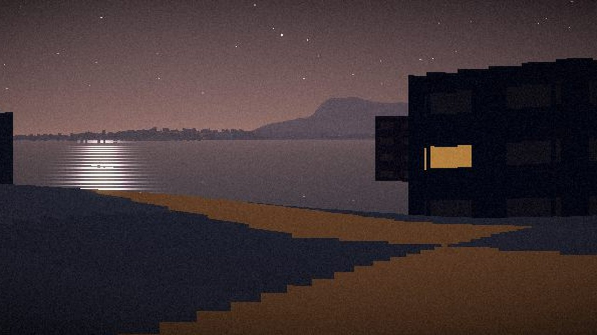
Opening text sent (111 words)
A simple grey-box model of a harbour city at night: flat untextured blocks, a few lit yellow windows, a pale path leading down to dark water, moonlight on the water. A Black man in his thirties with close-cropped hair, wearing a matte black mock-neck long sleeve, black trousers and black boots, stands a few steps ahead of the camera with his back to us and walks away from us at an easy pace. The camera is at eye level behind him and follows, keeping his whole body in frame. Keep the flat blocky untextured look until the water changes it. Ahead at the end of the path stand tall closed gates.
| Sent at | Asked for | Key frame | Happened? | What the judge saw |
|---|---|---|---|---|
| 0.3 sscriptfor “gates” at 0.3 s | Ahead of him, the tall gates swing open. They are white marble and have wings. | 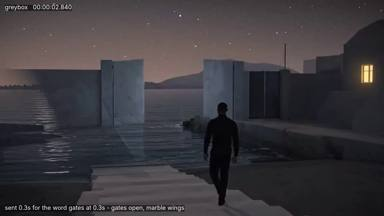 frame at 2.8 s | partly | Tall white marble gates are open ahead of the walking man, though they do not have wings. |
| 3.8 sscriptfor “hymns” at 6.8 s | Bright blue water made of small glowing white letters pours out through the open gates and runs down the path to his feet. | 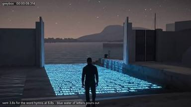 frame at 9.3 s | yes | A glowing blue ground pattern made of white letters spreads from the open gates to the man's feet. |
| 14.0 sscriptfor “yellow” at 17.0 s | Where the blue water touches the ground, the ground becomes a road of yellow bricks, laid one by one ahead of him as he walks. | 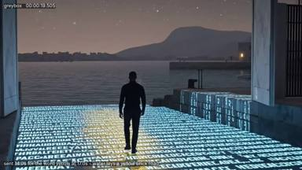 frame at 19.5 s | partly | A yellow glowing brick pattern appears underneath the man's feet amidst the blue glowing letters. |
| 19.8 sscriptfor “comets” at 22.8 s | Comets cross the night sky above him, and their light runs in lines across the water. | 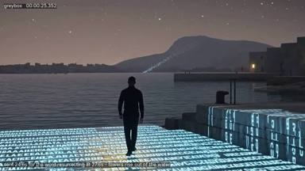 frame at 25.3 s | partly | A faint dotted streak appears in the sky above the mountain, without light lines running across the water. |
| 24.6 sscriptfor “resurrecting” at 27.6 s | The blue water rises to his knees. Towers rise up out of the water on both sides of him, water streaming off them. | 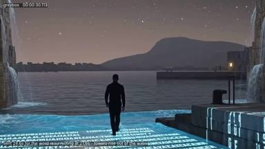 frame at 30.1 s | yes | Blue water rises around the man's legs as stone towers with water cascading down them appear on both sides. |
| 31.4 sscriptfor “nature” at 34.4 s | Vines and trees grow up the wet towers. Everything the water has touched now has colour and detail. | 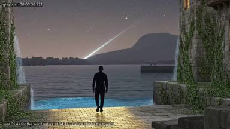 frame at 36.9 s | yes | Green vines cover the stone towers on both sides while a bright comet streaks across the sky above the yellow brick path. |
| 42.7 sscriptfor “safe” at 45.7 s | Windows light up one by one in blue and pink. In the doorways stand Black women and men of every age in long indigo and ochre robes, arms open to him. | 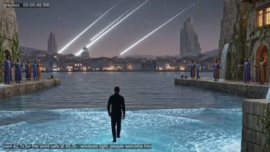 frame at 48.2 s | partly | People in indigo and ochre robes stand along the ledges with open arms while warm yellow windows glow and comets streak overhead. |
Key presses (as scheduled) — movement in the picture while held; still segments in this take average 3.7
| Held | Key | Movement | Against still |
|---|---|---|---|
| 0.2–3.5 s | key_w | 2.99 | about the same |
| 6.1–9.8 s | key_w | 3.18 | about the same |
| 12.7–17.2 s | key_w | 4.77 | more movement |
| 20.5–23.7 s | key_w | 8.2 | more movement |
| 27.8–31.9 s | key_w | 6.94 | more movement |
| 35.9–40.3 s | key_w | 4.65 | more movement |
| 44.6–49.0 s | key_w | 6.35 | more movement |
| 52.9–57.1 s | key_w | 2.95 | less movement |
Word to world, poem 06 (cel020)
W for the first 60% of each line (as scheduled). · judged by gemini-4-argon
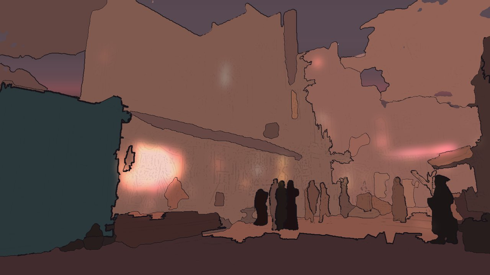
Opening text sent (100 words)
A flat cel-shaded cartoon street at dusk: large flat colour shapes with dark outlines, market stalls, soft pink and orange lights. A Black man in his thirties with close-cropped hair, wearing a matte black mock-neck long sleeve, black trousers and black boots, stands a few steps ahead of the camera with his back to us and walks away from us at an easy pace. The camera is at eye level behind him and follows, keeping his whole body in frame. Keep the flat cel-shaded cartoon look with outlines throughout. Ahead at the end of the street stand tall closed gates.
| Sent at | Asked for | Key frame | Happened? | What the judge saw |
|---|---|---|---|---|
| 0.3 sscriptfor “gates” at 0.3 s | Ahead of him, the tall gates swing open. They are white marble and have wings. | 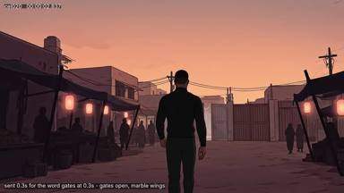 frame at 2.8 s | no | A man walks along a street at dusk toward closed wooden gates. |
| 3.8 sscriptfor “hymns” at 6.8 s | Bright blue water made of small glowing white letters pours out through the open gates and runs down the path to his feet. | 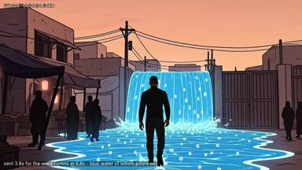 frame at 9.3 s | yes | A waterfall of bright blue water containing glowing white letters pours over the gateway and flows around the man's feet. |
| 14.0 sscriptfor “yellow” at 17.0 s | Where the blue water touches the ground, the ground becomes a road of yellow bricks, laid one by one ahead of him as he walks. | 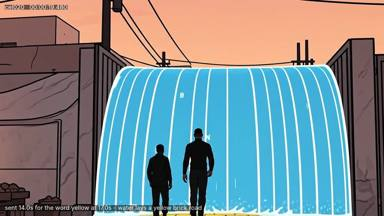 frame at 19.5 s | partly | Two figures stand at the edge of a yellow brick path facing a wall of blue water. |
| 19.8 sscriptfor “comets” at 22.8 s | Comets cross the night sky above him, and their light runs in lines across the water. | 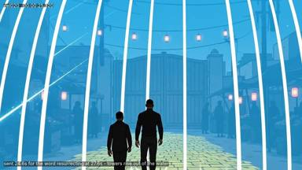 frame at 25.3 s | no | Two men walk down a yellow brick road toward closed gates behind white vertical lines under a blue tint. |
| 24.6 sscriptfor “resurrecting” at 27.6 s | The blue water rises to his knees. Towers rise up out of the water on both sides of him, water streaming off them. | 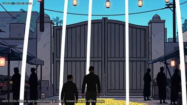 frame at 30.1 s | no | Two men stand on a yellow brick path in front of large closed gates with white vertical bars in the foreground. |
| 31.4 sscriptfor “nature” at 34.4 s | Vines and trees grow up the wet towers. Everything the water has touched now has colour and detail. | 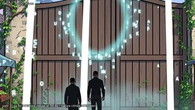 frame at 36.9 s | partly | Green vines grow along the sides of the wooden gates and stone pillars while glowing letters float in a circle. |
| 42.7 sscriptfor “safe” at 45.7 s | Windows light up one by one in blue and pink. In the doorways stand Black women and men of every age in long indigo and ochre robes, arms open to him. | 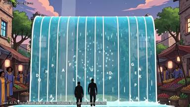 frame at 48.2 s | partly | People in blue and yellow robes stand by market stalls with open hands while a blue waterfall with letters flows over the gate. |
Key presses (as scheduled) — movement in the picture while held; still segments in this take average 10.44
| Held | Key | Movement | Against still |
|---|---|---|---|
| 0.2–3.5 s | key_w | 4.73 | less movement |
| 6.1–9.8 s | key_w | 11.82 | about the same |
| 12.7–17.2 s | key_w | 11.2 | about the same |
| 20.5–23.7 s | key_w | 20.52 | more movement |
| 27.8–31.9 s | key_w | 29.92 | more movement |
| 35.9–40.3 s | key_w | 26.56 | more movement |
| 44.6–49.0 s | key_w | 15.08 | more movement |
| 52.9–57.1 s | key_w | 23.0 | more movement |
Probe: Can a contact sheet of four views be given as one seed, so the model builds one territory from all four?
Hypothesis written before the run: Probably not: it takes exactly one starting frame, so I expect it to treat the sheet as a picture of four panels, or to enter one panel and discard the rest. · judged by gemini-4-argon
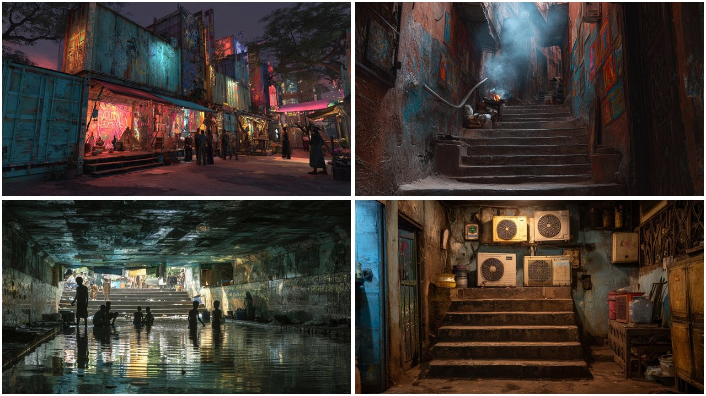
Opening text sent (53 words)
This picture is a reference sheet: four views of the same district of one city, a night market built from shipping containers with alleys and a flooded underpass. Begin standing inside that district at eye level, in a single continuous place that contains all four views nearby. Do not show panels or borders.
| Sent at | Asked for | Key frame | Happened? | What the judge saw |
|---|---|---|---|---|
| in the opening text | The frame shows one continuous scene, not a grid of separate panels with borders. | 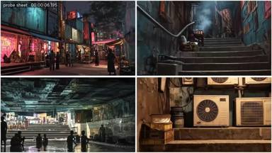 frame at 6.2 s | no | The frame is divided into a 2x2 grid of four separate panels separated by white borders. |
| in the opening text | The frame shows one continuous scene, not a grid of separate panels with borders. | frame at 11.8 s | no | The frame shows a 2x2 grid of four separate scenes divided by white borders. |
Key presses (as scheduled) — movement in the picture while held; still segments in this take average 5.13
| Held | Key | Movement | Against still |
|---|---|---|---|
| 1.0–10.0 s | key_w | 9.52 | more movement |
Probe: Can a map of the territory be the seed, with the camera dropped into it?
Hypothesis written before the run: Unlikely to become street level; I expect it to stay a map and slide over it like a flat picture. · judged by gemini-4-argon
Opening text sent (38 words)
This picture is a map of an island city seen from above. Begin standing on the ground inside this city at eye level, on a street near the harbour, looking along the street. Do not show the map.
| Sent at | Asked for | Key frame | Happened? | What the judge saw |
|---|---|---|---|---|
| in the opening text | The camera is at ground level among buildings or terrain, not looking down at a map. | frame at 6.2 s | yes | A first-person ground-level view of a cobblestone street beside a harbor with old buildings on the left and ship masts on the right. |
| in the opening text | The camera is at ground level among buildings or terrain, not looking down at a map. | frame at 11.8 s | yes | A ground-level view moving further down the cobblestone harbor street with timber-framed buildings on the left and docked ships on the right. |
Key presses (as scheduled) — movement in the picture while held; still segments in this take average 3.12
| Held | Key | Movement | Against still |
|---|---|---|---|
| 1.0–10.0 s | key_w | 10.52 | more movement |
Probe: If the seed text demands exaggerated life, does the street fill with action without any mid-take cue?
Hypothesis written before the run: Yes: the seed text is the strongest lever we have found, so crowd, motion and weather asked for here should appear and persist. · judged by gemini-4-argon
Opening text sent (99 words)
A Black man in his thirties with close-cropped hair, wearing a matte black mock-neck long sleeve, black trousers and black boots walks away from us down the middle of a night market street built from shipping containers; the camera follows behind him at eye level. The street is wildly alive: a dense crowd of Black women and men of every age in bright teal, orange and white wraps and coats dancing and carrying baskets, children running, banners snapping overhead, sparks rising from grills, flocks of birds wheeling, lanterns swinging, water running down the gutters. Everything moves, all the time.
| Sent at | Asked for | Key frame | Happened? | What the judge saw |
|---|---|---|---|---|
| in the opening text | There is a dense crowd of many people (more than ten) in the street. |  frame at 7.2 s frame at 7.2 s | partly | About ten or eleven people are standing in small groups along the illuminated street, rather than a dense crowd. |
| in the opening text | A man in black seen from behind is the main figure. | frame at 7.2 s | partly | Several people are seen from behind in dark clothing, including a figure in a long black coat on the right, though none is clearly the single main figure. |
| in the opening text | There is a dense crowd of many people (more than ten) in the street. | frame at 13.8 s | no | Around six people are visible in the street, mostly gathered on the left side. |
| in the opening text | A man in black seen from behind is the main figure. |  frame at 13.8 s frame at 13.8 s | partly | A man in a dark jacket is seen from behind on the left and a man in a black coat and hat stands on the right, with neither being the sole main figure. |
Key presses (as scheduled) — movement in the picture while held; still segments in this take average 5.37
| Held | Key | Movement | Against still |
|---|---|---|---|
| 1.0–12.0 s | key_w | 11.57 | more movement |
Probe: If the camera turns steadily in one direction, does it come back round to the place it started?
Hypothesis written before the run: It will keep inventing new city rather than close the circle: nothing we have seen suggests it remembers what is behind it. · judged by gemini-4-argon
Opening text sent (34 words)
A wet stone plaza in an Afrofuturist harbour city, with a tall terracotta temple and an arched doorway. The camera stands still at eye level in the middle of the plaza and only turns.
| Sent at | Asked for | Key frame | Happened? | What the judge saw |
|---|---|---|---|---|
| in the opening text | A tall orange or terracotta building with a large arched doorway is visible. | frame at 11.2 s | yes | A tall terracotta building with arched doorways, palm trees, and market stalls in a courtyard. |
| in the opening text | A tall orange or terracotta building with a large arched doorway is visible. | frame at 22.0 s | yes | A tall terracotta building with an arched doorway, palm trees, and market stalls near the water. |
Key presses (as scheduled) — movement in the picture while held; still segments in this take average None
| Held | Key | Movement | Against still |
|---|---|---|---|
| 1.0–21.0 s | arrow_left | 17.19 | — |
Poem 06, one continuous take
· judged by gemini-4-argon
Opening text sent (150 words)
Afrofuturist Atlantis: a Black harbour city that kept its flood, mended in white ceramic seamed with light. Everyone here is Black. Keep the look of the starting picture. Night. A great crowd of Black women and men of every age, in long indigo and ochre robes with brass at their wrists, stands with their backs to us facing an enormous vaulted opening full of stars and firelight. In the middle of the crowd, a few steps ahead of the camera with his back to us, is a Black man in his thirties with close-cropped hair, wearing a matte black mock-neck long sleeve, black trousers and black boots. He walks forward through the crowd toward the opening and the camera follows him at eye level, keeping his whole body in frame. The world changes violently and fluidly around him whenever something new is described. Sound: a crowd humming, fire, deep drums.
| Sent at | Asked for | Key frame | Happened? | What the judge saw |
|---|---|---|---|---|
| 0.3 sscriptfor “gates” at 0.3 s | The ground ahead of him splits open and two enormous white marble wings unfold upward out of it, forming a gate. The crowd parts to let him through. | frame at 2.8 s | yes | Two huge white wing structures rise ahead of a parted crowd as a man stands in the middle facing a fire between them. |
| 4.3 sscriptfor “hymns” at 6.8 s | A wall of bright blue water full of glowing letters bursts through the marble gate and floods the ground, rising past his knees to his waist. He keeps walking through it. | frame at 9.3 s | partly | Blue water spreads across the ground behind the man and around the base of the giant white wings, without glowing letters or reaching his waist. |
| 13.5 sscriptfor “yellow” at 17.0 s | A road of yellow bricks heaves up out of the blue flood under his feet and lifts him above the water, carrying him forward. | frame at 19.5 s | yes | A yellow brick path appears under the man's feet leading toward the fire and giant white wings while the water recedes around it. |
| 19.3 sscriptfor “comets” at 22.8 s | Comets fall out of the sky and smash into the water ahead. Where each one lands, a tall white tower shoots up out of the flood. | frame at 25.3 s | partly | Three tall white lattice towers rise from the blue water in front of the wings, though no falling comets are visible. |
| 24.1 sscriptfor “resurrecting” at 27.6 s | All the water drains away at once, pouring in waterfalls off a vast white city that was hidden under it: towers, bridges and stairs on every side of him, streaming wet. | frame at 30.1 s | partly | A background city with waterfalls pouring down its walls appears between the giant wings and white towers. |
| 33.1 sscriptfor “hope” at 36.6 s | Trees, vines and flowers burst out of every wet wall and climb the towers in seconds, blooming as he passes. | frame at 39.1 s | yes | Green vines with pink flowers grow up along the giant white wings in the foreground in front of the city and waterfalls. |
| 42.2 sscriptfor “safe” at 45.7 s | Doors fly open along the street and hundreds of Black women and men of every age in indigo and ochre robes pour out, walking and dancing beside him. | frame at 48.2 s | partly | A small distant crowd gathers at the base of the waterfalls between the wings and flowering vines, without doors or robed dancers near the man. |
| 53.9 sscriptfor “currency” at 57.4 s | A blue light pulses in every chest and every window together, in one slow rhythm, brightening with each step he takes. | frame at 59.9 s | no | The camera tilts up toward the starry sky and tall flame between the white spire, castle, and flowering wings. |
| 62.7 sscriptfor “candlelight” at 66.2 s | Thousands of candles light at once, in the windows and in the hands of the robed Black women and men around him. Their faces glow and smile. | frame at 68.7 s | partly | A few lit candles appear at the bottom left near the castle and flame, with blue light streaks in the sky but no people visible. |
| 67.1 sscriptfor “narrow” at 70.6 s | The towers lean in overhead and the street squeezes into a warm stone alley only two people wide, long shadows running ahead of him. | frame at 73.1 s | no | A tall column of fire rises between gothic spires covered in vines and flowers against a starry night sky. |
| 72.8 sscriptfor “rainbows” at 76.3 s | Bands of rainbow colour ripple outward from the singing crowd across the walls and the sky, and the clouds tear loose and float upward. | frame at 78.8 s | partly | Blue mist swirls behind the vine-covered spires and central flame against the starry sky, with no rainbow bands or crowd. |
| 85.5 sscriptfor “continuums” at 89.0 s | A ring of white light opens on the ground around his feet and widens in every direction until it passes the horizon. | frame at 91.5 s | no | A crowd of people in robes stands near a stone building and palm tree behind the central flame and white lattice spires. |
| 93.2 sscriptfor “welcoming” at 96.7 s | The Black man in the black mock-neck stops, turns to face us, and opens his arms. Behind him the whole white city is lit and full of people. | frame at 99.2 s | partly | A Black man in a black top faces the camera with his arms down, standing next to the flame with a robed crowd and dark city behind him. |
Key presses — movement in the picture while held; still segments in this take average 12.66
| Held | Key | Movement | Against still |
|---|---|---|---|
| 0.2–3.2 s | key_w | 4.01 | less movement |
| 6.1–9.5 s | key_w | 11.18 | about the same |
| 12.7–16.8 s | key_w | 9.2 | less movement |
| 20.5–23.4 s | key_w | 11.1 | about the same |
| 27.8–31.6 s | key_w | 11.94 | about the same |
| 35.9–39.9 s | key_w | 11.01 | about the same |
| 44.6–48.6 s | key_w | 14.81 | about the same |
| 52.9–56.7 s | key_w | 17.49 | more movement |
| 61.7–65.4 s | key_w | 23.8 | more movement |
| 68.8–72.5 s | key_w | 25.95 | more movement |
| 75.9–80.5 s | key_w | 36.55 | more movement |
| 84.6–88.3 s | key_w | 22.05 | more movement |
Poem 12, text only, no cues, no keys
Everything asked for was in the opening text; nothing was sent afterwards. · judged by gemini-4-argon
Opening text sent (514 words)
Afrofuturist Atlantis: a Black harbour city that kept its flood, mended in white ceramic seamed with light. Everyone here is Black. PLACE. Evening inside a rebuilt temple hall of white ceramic, its cracks mended with seams of soft light. Timber rafters overhead, a hand-painted WELCOME HOME banner hung between them. Tall doors stand open at the far end onto a meadow at sunset, a line of trees, and a small house with its porch light on. Long tables, mismatched chairs, picnic lights on strings. PEOPLE. Four Black men in their fifties, old friends, stand close together in the middle of the hall. One wears a matte black mock-neck long sleeve and black trousers and has close-cropped greying hair and a short beard: he is the poet. One wears a rust-orange corduroy jacket over a white tee and has a shaved head. One wears a sky-blue linen shirt with rolled sleeves and has grey locs tied back. One wears a green football jersey and a flat cap. Each holds a small glass hourglass in which the sand glows like embers. Behind them, faint as breath on glass, stand three Black elders, two women and a man in their eighties, in white linen and wide hats; they are not solid and nobody looks at them directly. Along the back wall is a row of empty chairs. WHAT THEY DO. They laugh loudly and often. They pull each other into hugs for no reason, slap shoulders, lean foreheads together. One presses his ear to another's chest to listen, and they pass that gesture down the line. Each time they laugh, a warm light pulses once in all four chests together, and the seams of light in the walls pulse with it. Nobody is ever alone in frame for long. HOW THE ROOM CHANGES. Slowly through the whole scene the daylight in the doorway deepens from gold to rose to blue dusk. The embers in the hourglasses brighten as the room dims. Near the end the four men turn the hourglasses over together, walk out through the tall doors side by side into the meadow, where a football arcs across the last light, and go up toward the lit porch with their backs to us. CAMERA. One unbroken handheld shot at chest height, inside the circle of friends, close enough to see hands and faces. It drifts gently from face to face, favouring hands on shoulders, wrists, the ear on the chest. It tilts up once to the rafters and the empty chairs and comes back. It never rushes forward and never leaves the men; at the end it follows them out through the doors from behind. LIGHT. Warm tungsten picnic bulbs against cool dusk from the doors. Deep brown skin lit with full tonal range, a warm key and a blue rim. Soft halation on the bulbs, gentle film grain. SOUND. Overlapping laughter, glasses set down, chairs scraping, crickets beginning outside. Leave room under it for one man's speaking voice. FEELING. Nostalgia, joy, comfort, belonging, gratitude: decades later, less time for words and more space for laughter.
| Sent at | Asked for | Key frame | Happened? | What the judge saw |
|---|---|---|---|---|
| in the opening text | Four Black men in their fifties in a hall with a WELCOME HOME banner, each holding a glowing hourglass. | frame at 8.0 s | yes | Four Black men stand together in a hall under a WELCOME HOME banner, each holding a red hourglass-shaped glass. |
| in the opening text | The men are hugging or laughing with heads thrown back. | frame at 14.0 s | no | The four men stand in a circle holding their hourglasses and smiling mildly as the camera pulls back. |
| in the opening text | The camera is close, at chest height, inside the group of men. | frame at 25.0 s | no | A wide shot shows the four men standing in the middle of the large hall. |
| in the opening text | One man presses his ear to another man's chest. | frame at 36.0 s | no | A wider shot of the hall shows the four men still standing in the same pose holding their hourglasses. |
| in the opening text | The daylight in the doorway has turned to blue dusk, clearly darker than at the start. | frame at 46.0 s | no | An even wider shot shows the hall with bright white daylight still shining through the open doorway behind the men. |
| in the opening text | The men have turned their hourglasses over or are walking out through the tall doors. | frame at 58.0 s | no | From very far back in the hall, the four men are still standing in the same spot in front of the doorway. |
| in the opening text | The men are outside, walking toward a house with a lit porch, backs to camera. | frame at 65.0 s | no | An extremely wide interior shot of the hall shows the four men still standing near the far doorway. |
Poem 12 as nine shots
Keys as scheduled: held from 1 s into the shot until 1.2 s before its end. · judged by gemini-4-argon
Opening text sent (11 words)
(each shot has its own opening text; see the rows below)
| Sent at | Asked for | Key frame | Happened? | What the judge saw |
|---|---|---|---|---|
| 0 snew session, shot 1 | The four men pull each other into one big laughing hug in the middle of the hall. | frame at 5.1 s | partly | Four men stand close together smiling and putting hands on shoulders in a hall with a Welcome Home banner, holding hourglasses rather than in a full big hug. |
| 8.6 snew session, shot 2 | The four men throw their heads back laughing; a warm light pulses in each of their chests at the same moment. | frame at 13.5 s | no | Four men stand facing forward smiling calmly while holding hourglasses in front of their chests. |
| 16.8 snew session, shot 3 | The four men stand still in the doorway looking in, each holding up his glowing hourglass; the only light is the embers. | frame at 21.4 s | partly | Four men stand in a doorway inside a dimly lit room with string lights overhead, three of them visibly holding glowing hourglasses. |
| 24.5 snew session, shot 4 | The four men walk among the trees and each lays a hand flat on a trunk as he passes. | frame at 27.7 s | partly | Four men walk together through the woods holding glowing hourglasses without touching any tree trunks. |
| 29.9 snew session, shot 5 | The four men stand shoulder to shoulder facing us, arms around each other, grinning as if for a photograph. | frame at 34.5 s | yes | Four men stand shoulder to shoulder in a field with arms around each other's shoulders, smiling for the camera while holding hourglasses. |
| 37.5 snew session, shot 6 | The four men stand in a line; each one presses his ear to the chest of the next man and listens with eyes closed. | frame at 42.1 s | partly | Four men stand closely in a single-file line on a beach with their eyes closed, facing forward rather than pressing their ears to each other's chests. |
| 45.2 snew session, shot 7 | The four men walk single file along the ridge away from us, their hourglasses glowing like lanterns. | frame at 50.7 s | partly | Three men walk in single file toward the camera along a ridge at night while carrying glowing hourglasses. |
| 54.4 snew session, shot 8 | The man in the green jersey throws a football in a high arc; the other three run laughing to catch it. | frame at 57.6 s | no | Four men walk side by side through tall grass at sunset holding hourglasses, with no football visible. |
| 59.8 snew session, shot 9 | The four men walk up toward the lit porch side by side with their backs to us. | frame at 62.8 s | yes | Four men walk side by side with their backs to the camera up a grassy path toward a lit white house. |
Key presses (as scheduled) — movement in the picture while held; still segments in this take average 9.13
| Held | Key | Movement | Against still |
|---|---|---|---|
| 25.5–28.7 s | key_d | 8.05 | about the same |
| 38.5–44.0 s | key_d | 10.19 | about the same |
| 46.2–53.2 s | key_w | 6.68 | less movement |
| 60.8–63.6 s | key_w | 5.33 | less movement |
Magic Ride, grey-box, eight shots
Keys as scheduled: held from 1 s into the shot until 1.2 s before its end. · judged by gemini-4-argon
Opening text sent (11 words)
(each shot has its own opening text; see the rows below)
| Sent at | Asked for | Key frame | Happened? | What the judge saw |
|---|---|---|---|---|
| 0 snew session, shot 1 | He stands on the kerb with his back to us beside the parked motorcycle under one street lamp, and runs his hand along its tank. |  frame at 7.8 s frame at 7.8 s | partly | A man sits straddling a parked motorcycle under a street lamp in profile view with his hands on the handlebars. |
| 0 snew session, shot 1 | Third person: the man is seen from behind with his whole body and the motorcycle visible in the lower half of the frame. | frame at 7.8 s | partly | A man sits on a motorcycle in right profile view in the lower right half of the frame. |
| 13.0 snew session, shot 2 | He swings a leg over the motorcycle, the headlight comes on, and he pulls away down the street. |  frame at 17.7 s frame at 17.7 s | yes | A man rides a motorcycle with its headlight on down a street away from the camera. |
| 13.0 snew session, shot 2 | Third person: the man is seen from behind with his whole body and the motorcycle visible in the lower half of the frame. | frame at 17.7 s | yes | A man on a motorcycle is seen from behind in the lower center of the frame. |
| 20.9 snew session, shot 3 | He rides the motorcycle alone through a huge empty plaza and into a tunnel. Nobody else anywhere. | frame at 30.0 s | yes | A man rides a motorcycle alone into a dark tunnel entrance. |
| 20.9 snew session, shot 3 | Third person: the man is seen from behind with his whole body and the motorcycle visible in the lower half of the frame. |  frame at 30.0 s frame at 30.0 s | yes | A man on a motorcycle is seen from behind in the lower center of the frame entering a tunnel. |
| 36.1 snew session, shot 4 | He rides the motorcycle down a crowded avenue, one hand off the bars; Black women and men in bright teal, orange and white coats and wraps on both pavements turn their heads to watch him pass. |  frame at 46.4 s frame at 46.4 s | partly | A man rides a motorcycle with both hands on the handlebars down a street with three distant glowing figures on the pavements. |
| 36.1 snew session, shot 4 | Third person: the man is seen from behind with his whole body and the motorcycle visible in the lower half of the frame. | frame at 46.4 s | yes | A man on a motorcycle is seen from behind in the lower center of the frame riding down a street. |
| 53.3 snew session, shot 5 | He rides the motorcycle out of the city along a raised road; ahead the moon sinks behind the skyline and the sky turns from violet to gold. | frame at 63.8 s | partly | A man rides a motorcycle along a road by the water under a starry dusk sky with mountains and city lights in the distance. |
| 53.3 snew session, shot 5 | Third person: the man is seen from behind with his whole body and the motorcycle visible in the lower half of the frame. |  frame at 63.8 s frame at 63.8 s | yes | A man on a motorcycle is seen from behind in the lower center of the frame. |
| 70.7 snew session, shot 6 | He rides the motorcycle up a mountain road in the first sunlight, leaning hard into a long curve; birds burst up from the roadside. |  frame at 77.9 s frame at 77.9 s | partly | A man rides a motorcycle upright up a dark grassy hillside at night under a starry sky. |
| 70.7 snew session, shot 6 | Third person: the man is seen from behind with his whole body and the motorcycle visible in the lower half of the frame. | frame at 77.9 s | yes | A man on a motorcycle is seen from behind in the lower center of the frame riding up a hill. |
| 82.7 snew session, shot 7 | He rides the motorcycle along the mountain ridge in warm morning light with both arms stretched out wide. |  frame at 88.8 s frame at 88.8 s | partly | A man rides a motorcycle up a dark hillside under a starry night sky with his hands near the handlebars. |
| 82.7 snew session, shot 7 | Third person: the man is seen from behind with his whole body and the motorcycle visible in the lower half of the frame. | frame at 88.8 s | yes | A man on a motorcycle is seen from behind in the lower center of the frame on a dark hillside. |
| 92.9 snew session, shot 8 | He stops the motorcycle at the top of the pass and looks out over the sunlit city below. | frame at 94.9 s | partly | A man on a stopped motorcycle sits on a dark mountainside at night under a starry sky overlooking water and a few faint distant lights. |
| 92.9 snew session, shot 8 | Third person: the man is seen from behind with his whole body and the motorcycle visible in the lower half of the frame. |  frame at 94.9 s frame at 94.9 s | yes | A man sitting on a motorcycle is viewed from behind in the lower center of the frame against a dark mountain and starry sky. |
Key presses (as scheduled) — movement in the picture while held; still segments in this take average 7.29
| Held | Key | Movement | Against still |
|---|---|---|---|
| 14.0–19.7 s | key_w | 6.69 | about the same |
| 21.9–34.9 s | key_w | 7.66 | about the same |
| 37.1–52.1 s | key_w | 4.78 | less movement |
| 54.3–69.5 s | key_w | 2.23 | less movement |
| 71.7–81.5 s | key_w | 2.91 | less movement |
| 83.7–91.7 s | key_w | 5.07 | less movement |
Magic Ride, cel-shaded, four shots
Keys as scheduled: held from 1 s into the shot until 1.2 s before its end. · judged by gemini-4-argon
Opening text sent (11 words)
(each shot has its own opening text; see the rows below)
| Sent at | Asked for | Key frame | Happened? | What the judge saw |
|---|---|---|---|---|
| 0 snew session, shot 1 | He stands on the kerb with his back to us beside the parked motorcycle under one street lamp, and runs his hand along its tank. | frame at 7.8 s | partly | A man stands on the road beside a parked motorcycle under a street lamp with his hand touching the fuel tank. |
| 0 snew session, shot 1 | Third person: the man is seen from behind with his whole body and the motorcycle visible in the lower half of the frame. |  frame at 7.8 s frame at 7.8 s | partly | A man is seen from behind from the thighs up standing next to a motorcycle in the lower half of the frame. |
| 13.0 snew session, shot 2 | He swings a leg over the motorcycle, the headlight comes on, and he pulls away down the street. |  frame at 17.7 s frame at 17.7 s | partly | A man is riding a motorcycle with its headlight on down a city street toward the camera. |
| 13.0 snew session, shot 2 | Third person: the man is seen from behind with his whole body and the motorcycle visible in the lower half of the frame. | frame at 17.7 s | no | A man is seen from the front riding a motorcycle down a street in the distance. |
| 20.9 snew session, shot 3 | He rides the motorcycle alone through a huge empty plaza and into a tunnel. Nobody else anywhere. | frame at 30.0 s | partly | A man rides a motorcycle alone away from the camera across a wide empty foggy plaza, with no tunnel visible. |
| 20.9 snew session, shot 3 | Third person: the man is seen from behind with his whole body and the motorcycle visible in the lower half of the frame. |  frame at 30.0 s frame at 30.0 s | yes | A man is seen from behind riding a motorcycle in the lower center of the frame. |
| 36.1 snew session, shot 4 | He rides the motorcycle down a crowded avenue, one hand off the bars; Black women and men in bright teal, orange and white coats and wraps on both pavements turn their heads to watch him pass. | frame at 46.4 s | partly | A man rides a motorcycle with both hands on the handlebars down a lantern-lit street lined with light-skinned pedestrians in teal, orange, and white clothes. |
| 36.1 snew session, shot 4 | Third person: the man is seen from behind with his whole body and the motorcycle visible in the lower half of the frame. |  frame at 46.4 s frame at 46.4 s | yes | A man is seen from behind riding a motorcycle in the lower center of the frame down a street lined with people. |
Key presses (as scheduled) — movement in the picture while held; still segments in this take average 12.7
| Held | Key | Movement | Against still |
|---|---|---|---|
| 14.0–19.7 s | key_w | 11.18 | about the same |
| 21.9–34.9 s | key_w | 5.01 | less movement |
| 37.1–52.1 s | key_w | 11.2 | about the same |
Magic Ride, grey-box with rider in the seed, two shots
Keys as scheduled: held from 1 s into the shot until 1.2 s before its end. · judged by gemini-4-argon
Opening text sent (11 words)
(each shot has its own opening text; see the rows below)
| Sent at | Asked for | Key frame | Happened? | What the judge saw |
|---|---|---|---|---|
| 0 snew session, shot 1 | Night. He sits on the parked motorcycle under one street lamp with his back to us and runs his hand along its tank. |  frame at 7.8 s frame at 7.8 s | partly | A man sits on a parked motorcycle at night with his back to us, his hands on the handlebars and the headlight shining ahead, with no street lamp visible. |
| 0 snew session, shot 1 | Third person: the man is seen from behind with his whole body and the motorcycle visible in the lower half of the frame. | frame at 7.8 s | yes | A man on a motorcycle is seen from behind in the lower half of the frame against a city backdrop at night. |
| 13.0 snew session, shot 5 | The sky is turning from violet to gold; the moon is setting. He rides the motorcycle out of the city along a raised road; ahead the moon sinks behind the skyline and the sky turns from violet to gold. |  frame at 23.4 s frame at 23.4 s | partly | A man sits on a motorcycle overlooking water, a distant city, and mountains under a starry dawn-tinted sky, without a setting moon or raised road. |
| 13.0 snew session, shot 5 | Third person: the man is seen from behind with his whole body and the motorcycle visible in the lower half of the frame. | frame at 23.4 s | partly | A man on a motorcycle is seen from behind in the lower half of the frame, cropped at the mid-legs and upper rear of the bike. |
Key presses (as scheduled) — movement in the picture while held; still segments in this take average 2.8
| Held | Key | Movement | Against still |
|---|---|---|---|
| 14.0–29.2 s | key_w | 0.91 | less movement |